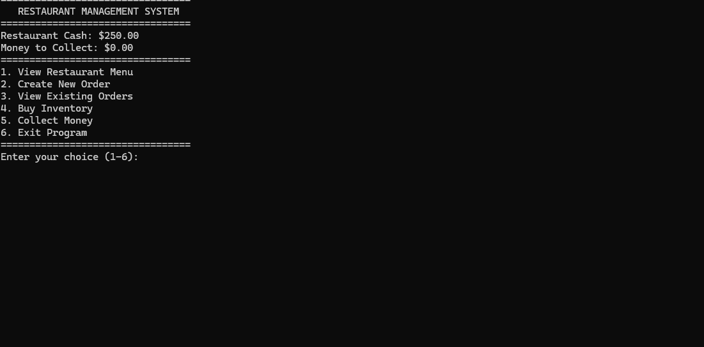

Languages
C++, HTML, CSS, Lua
Student Developer Portfolio
I am a programming student focused on software and game development. I enjoy creating interactive systems, solving programming problems, and improving my skills through hands-on projects. My goal is to continue growing as a developer and build software and game experiences professionally.

About Me
My interest in development grew from playing games and becoming curious about how they were created. I began learning game development and programming through hands-on projects, which helped me build a stronger understanding of programming logic, debugging, and problem-solving. I am continuing to improve my skills in software development while learning how to organize larger projects and write cleaner, more maintainable code.
C++, HTML, CSS, Lua
Visual Studio, Git, GitHub, Roblox Studio, Unreal Engine
Object-oriented programming, game development, debugging, and clean code
Featured Work
Below is one of my recent programming projects that demonstrates my progress with C++, object-oriented programming, project organization, and problem-solving.

C++ Console Application
The Restaurant Management System is a C++ console application that simulates managing restaurant operations. The program allows the user to manage customers, orders, inventory, money, and the progression of a restaurant workday.
One challenge I faced was keeping the program organized as more features were added. I approached this by separating responsibilities into additional classes, including a DayManager class for the restaurant's day and time systems. This project helped me improve my understanding of object-oriented programming, classes, vectors, input validation, debugging, and code organization.
Contact
Feel free to view my projects or connect with me through my professional profiles.